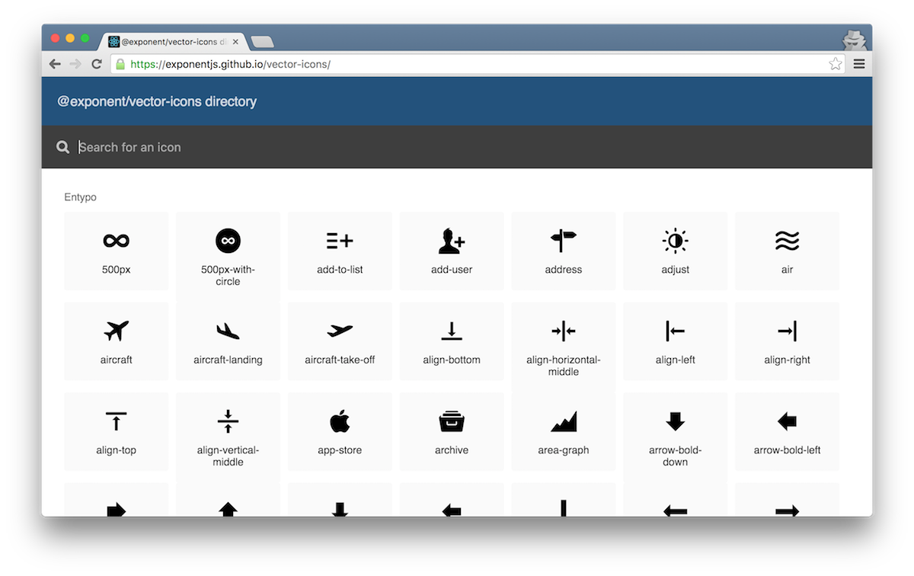

尽管 emoji 很火, 不是没一个 app 都可以所有 icons 都用 emoji的 -- 或许你想用一些流行的 icon 字体，比如 FontAwesome, Glyphicons 或者 Ionicons， 或者一些 PNGs 你从 The Noun Project 精挑细选的。Exponent 目前不 支持 SVGs。接下来我们会介绍这两种方式。
如果你从 XDE 里创建的模板项目的话, 她包含 8 种不同的图标集, 你可以在 @exponent/vector-icons directory 浏览所有的图标。
import React from 'react';
import { Ionicons } from '@exponent/vector-icons';
export default class IconExample extends React.Component {
render() {
return (
<Ionicons name="md-checkmark-circle" size={32} color="green" />
);
}
}
这个组件加载 Ionicons 字体，如果之前没加载的话，生成一个之前提到过的 vector-icons 里边的一个
复选 (checkmark) 图标. @exponent/vector-icons 是在 react-native-vector-icons 基础上创建的，而且 API 类似。
唯一的区别是 @exponent/vector-icons 使用了一个更习惯的 import 风格:
import { Ionicons } from '@exponent/vector-icons'; instead of..
import Ionicons from 'react-native-vector-icons/Ionicons';.
Note: 和在 Exponent 里 使用自定义字体 一样, 你需要在渲染之前先加载图标字体。所以以上的Ionicons.font, 对应{ionicons: require('path/to/ionicons.ttf')}, 更多文档可以查看 Preloading assets.
第一步，确保你导入你的自定义图标字体。了解更多关于加载自定义字体. 一旦你的字体加载完毕，你需要创建一个图标集。
@exponent/vector-icons 提供了三个方法帮助你创建图标集。
基于 glyphMap (key 是图标名称， value 是 UTF-8 字符或者对应的字符码) 返回你的自定义图标字体。
fontFamily 是字体的名称，不是文件名称。更多细节可以参考: react-native-vector-icons
import { Font } from 'exponent';
import { createIconSet } from '@exponent/vector-icons';
const glyphMap = { 'icon-name': 1234, test: '∆' };
const CustomIcon = createIconSet(glyphMap, 'FontName');
export default class CustomIconExample extends React.Component {
state = {
fontLoaded: false
}
async componentDidMount() {
await Font.loadAsync({
'FontName': require('assets/fonts/custom-icon-font.ttf')
});
this.setState({fontLoaded: true});
}
render() {
if (!this.state.fontLoaded) { return null;}
return (
<CustomIcon name="icon-name" size={32} color="red" />
);
}
}
基于一个 Fontello 配置文件来方便的创建自定义字体。不要忘记之前讨论过的导入字体，
然后把 config.json 放在你的项目里， 使用 Font.loadAsync.
// Once your custom font has been loaded...
import { createIconSetFromFontello } from '@exponent/vector-icons';
import fontelloConfig from './config.json';
const Icon = createIconSetFromFontello(fontelloConfig, 'FontName');
基于一个 IcoMoon 配置文件来方便的创建自定义字体。不要忘记之前讨论过的导入字体，
然后把 config.json 放在你的项目里， 使用 Font.loadAsync.
// Once your custom font has been loaded...
import { createIconSetFromIcoMoon } from '@exponent/vector-icons';
import icoMoonConfig from './config.json';
const Icon = createIconSetFromIcoMoon(icoMoonConfig, 'FontName');
如果你知道怎么用 react-native <Image> 组件的话，就太 easy 了。
import React from 'react';
import { Image } from 'react-native';
export default class SlackIcon extends React.Component {
render() {
return (
<Image
source={require('../assets/images/slack-icon.png')}
fadeDuration={0}
style={{width: 20, height: 20}}
/>
);
}
}
假设我们的 SlackIcon class 在 my-project/components/SlackIcon.js,
我们的图标文件在 my-project/assets/images, 为了引用图片我们 require 图片的
相对路径。你可以提供不同的像素密集程度的图标，会自动选择最合适的图片。在这个例子里，
我们实际上用了 slack-icon@2x.png 还有 slack-icon@3x.png, 所以如果我是
在 iPhone 6s 上的话，看到的图片会是 slack-icon@3x.png. 更多可以看
Images guide in the
react-native documentation.
我们也可以设置 fadeDuration (Android 特有的属性) 为 0, 因为通常我们想让图标立刻
显示出来，而不是等待几百毫秒慢慢的显示。